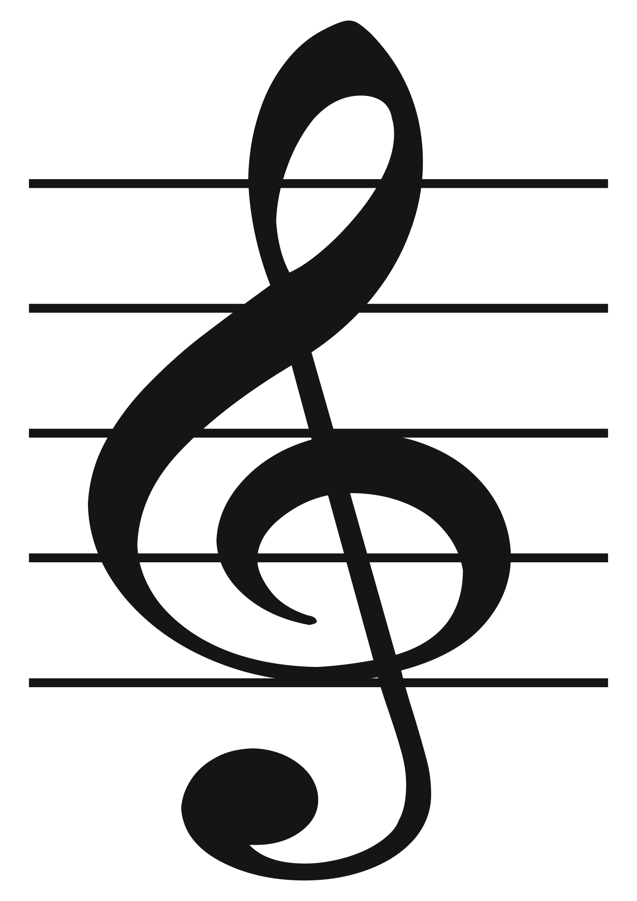
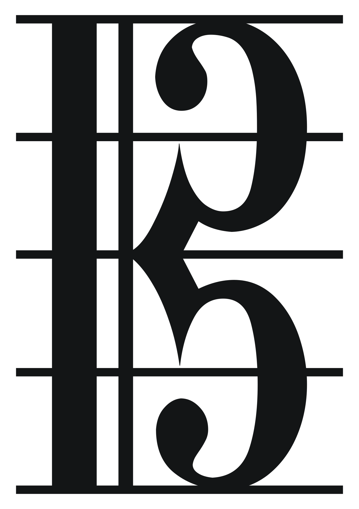
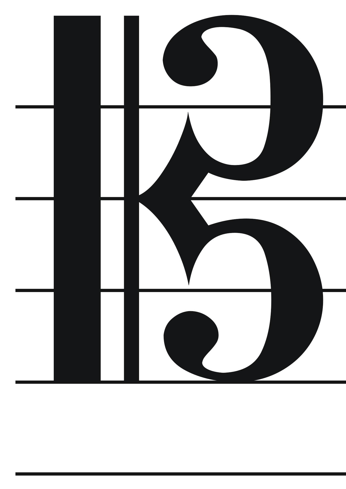
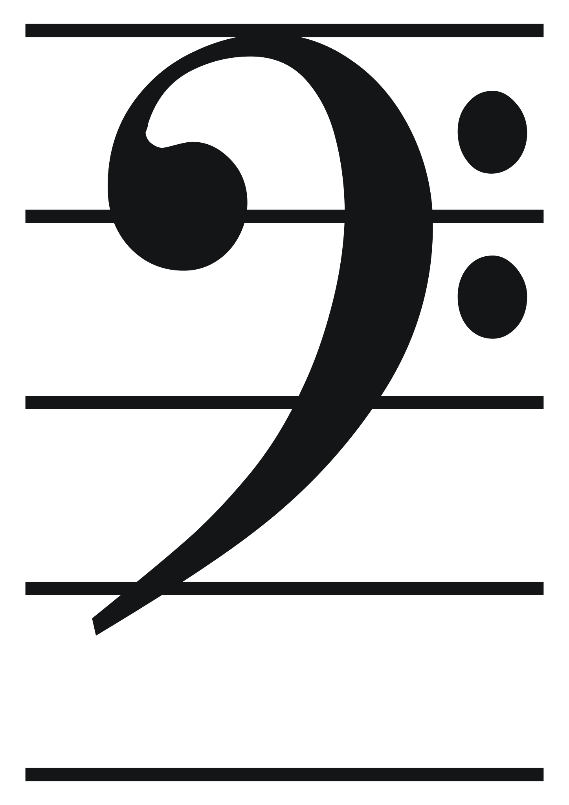

Theoretical language
The knowledge that underpins compositional devices, techniques and processes — metre and tempo, scales and tonality, and chords and harmony.
Metre & tempo
16 terms- Regular metre
- A time signature with a consistent, unchanging beat grouping throughout a piece.
- Simple metre
- Each beat divides naturally into two (e.g. 2/4, 3/4, 4/4).
- Compound metre
- Each beat divides naturally into three (e.g. 6/8, 9/8, 12/8).
- Irregular metre
- A metre with uneven beat groupings within the bar (e.g. 5/8, 7/8).
- Mixed metre
- Frequent, deliberate changes of time signature within a piece.
- Poly-metre
- Two or more different metres sounding simultaneously in different parts.
- Tempo gradations
- Tempo changes indicated by Italian terms — almost all gradual, with one common exception noted below.
Getting faster (gradual): Accelerando (accel.), Stringendo (pressing forward, with mounting intensity), Precipitando (rushing forward, headlong).
Getting slower (gradual): Rallentando (rall.), Allargando (allarg. — broadening, often with a growing dynamic), Calando (slowing and softening together), Morendo (dying away), Smorzando (smorz. — fading away), Perdendosi (losing itself, fading into silence).
Exception — immediate, not gradual: Ritardando and Ritenuto are both abbreviated "rit.", but only ritardando is a gradual slowing; ritenuto is an immediate, deliberate holding-back of the tempo. - Metronome markings
- A precise tempo instruction given in beats per minute (e.g. ♩ = 120).
- Expressive tempo indications
- Terms indicating tempo and character, usually Italian but sometimes French or German. Reading across a row shows roughly equivalent speeds in each language.
Approximate speed → Language Very slow Slow Moderate Moderately fast Fast Very fast Italian Largo / Grave / Lento (broad / solemn / slow) Larghetto (a little faster than Largo); Adagio (at ease) Andante / Andantino (walking pace / slightly faster); Moderato Allegretto Allegro / Vivace (lively / brisk) Presto / Prestissimo (as fast as possible) French Lent — Modéré Vif / Animé (lively / animated) Vite Très vite German Langsam — Mäßig Lebhaft / Bewegt (lively / agitated) Rasch / Schnell (quick / fast) — - Note values & rhythm grouping
- The full range of note and rest durations, and the style-appropriate conventions for beaming and grouping them on the page.
- A tempo
- Return to the previous, main tempo after a deviation.
- Tempo primo (Tempo I)
- Return specifically to the very first tempo heard in the piece, not just the most recent one.
- L'istesso tempo
- "The same tempo" — the beat stays constant even though the notated time signature or predominant note values change (e.g. moving from simple to compound time at the same pulse).
- Più mosso / Meno mosso
- "More motion" / "less motion" — an immediate shift to a faster / slower tempo.
- Fermata
- A symbol (𝄐) instructing a note, chord or rest to be held longer than its written value.
- Senza misura
- "Without measure" — performed freely, without a strict, regular metre or bar-to-bar pulse; bars may be of uneven, unmeasured length.
Scales, modes & tonality
13 terms- Tonal centre
- The single pitch a piece or passage gravitates around and is heard to resolve toward — its aural “home.” In functional tonal music this is the tonic of the prevailing key; the broader term is also used for modal, atonal or non-functional music where a pitch acts as a centre of gravity without a full major/minor key context. e.g. a work built entirely on natural harmonics may be described as having a C tonal centre even without a conventional key signature.
- Tonic
- The first, “home” scale degree (scale degree 1) of a key — the note and chord a tonal piece resolves to.
- Enharmonic
- Two different note names (or key names) sounding the same pitch on a fixed-pitch instrument, e.g. G♯ and A♭ — used to reinterpret a note's spelling for smoother notation or to pivot into a distant key.
- Pentatonic scale
- A five-note scale, found across many world music traditions.
- Modal scale
- A scale drawn from the seven church modes. Quick formula for each, as scale degrees relative to the major scale:
Ionian 1 2 3 4 5 6 7 · Dorian 1 2 3♭ 4 5 6 7♭ · Phrygian 1 2♭ 3♭ 4 5 6♭ 7♭
Lydian 1 2 3 4♯ 5 6 7 · Mixolydian 1 2 3 4 5 6 7♭ · Aeolian 1 2 3♭ 4 5 6♭ 7♭
Locrian 1 2♭ 3♭ 4 5♭ 6♭ 7♭IonianDorianPhrygianLydianMixolydianAeolianLocrian - Diatonic major / minor
- A scale using only the notes belonging to a given major or minor key, with no chromatic alteration.
- Polytonality
- The simultaneous use of two or more different keys.
- Bitonality
- Polytonality involving exactly two simultaneous keys.
- Whole tone scale
- A six-note scale built entirely from whole-tone (major second) intervals.
- Tone row
- An ordered sequence of all twelve chromatic pitches, used as the basis for serial (twelve-tone) composition.
- Experimental scale forms
- Scales devised or adapted by a composer outside traditional Western scale systems.
- Microtonal scales
- Scales built from intervals smaller than a semitone. Common notation symbols:
↑ / ↓ (arrow above a note or accidental) — the simplest, most widely used convention: raises or lowers the pitch by a small, specified amount, often a quarter-tone.
Half-sharp (quarter-tone sharp) — a sharp sign with only one vertical stroke instead of two; raises the pitch by roughly a quarter-tone.
Half-flat (quarter-tone flat) — a backwards or slashed flat sign; lowers the pitch by roughly a quarter-tone.
Three-quarter-tone sharp / flat — a sharp or flat sign with an added stroke; raises or lowers the pitch by three quarter-tones. - Interval sets / pitch sets
- A defined collection of intervals or pitches used as compositional material, common in 20th- and 21st-century concert music. e.g. the pitch set {0, 1, 4} — a fixed three-note cell such as C–C♯–E — reused and transposed throughout a work, as in the atonal music of Schoenberg or Webern.
{0,1,4} on CSame set, transposed
Chords & harmony
12 terms- Triad
- A three-note chord built in thirds — root, third and fifth.
- Diminished chord
- A chord built from a minor third and a diminished (flattened) fifth, giving an unstable, tense quality.
- Augmented chord
- A triad built from a major third and an augmented (sharpened) fifth.
- Dominant seventh
- A major triad on the 5th scale degree with an added minor seventh, strongly pulling toward the tonic.
- Secondary seventh
- A seventh chord built on a scale degree other than the dominant.
- Inversion
- Rearranging a chord so a note other than the root sits in the bass.
Root position1st inversion2nd inversion
- Extended chords
- Chords that add the 9th, 11th or 13th above a seventh chord.
- Altered chords
- Chords containing notes chromatically raised or lowered outside the key, for colour or added tension.
- Diatonic harmony
- Harmony built exclusively from the notes and chords belonging to the prevailing key.
- Chromatic harmony
- Harmony that draws in notes and chords from outside the diatonic key.
- Chord progression
- A purposeful sequence of two or more chords moving through a passage of music (a cadence, below, is the specific two-chord case that closes a phrase). Common functional harmony examples: I–IV–V–I (classic tonic–subdominant–dominant–tonic), I–vi–IV–V (the "50s" or doo-wop progression), I–V–vi–IV (common pop progression), ii–V–I (jazz turnaround).
- Cadence
- A two-chord progression that closes a phrase or section:
Perfect (V–I) — dominant to tonic; the strongest, most conclusive close.
Imperfect (ending on V) — most commonly I–V or IV–V; sounds unfinished, like a pause mid-sentence.
Plagal (IV–I) — subdominant to tonic; the "Amen" cadence.
Interrupted (V–vi) — dominant to submediant; a deceptive, surprising resolution.
Compositional language
The techniques, methods and tools composers and performers use to construct, develop and shape musical ideas — rhythmic, melodic, harmonic, structural and textural devices, choices of performing media, expressive devices and digital techniques.
Rhythmic devices
12 terms- Additive rhythm
- A rhythmic grouping built by adding together small, often unequal units (e.g. 2+2+3) rather than dividing a bar evenly — common in Eastern European folk metres and some 20th-century concert music.
- Metric modulation
- A change of tempo achieved by reinterpreting a note value from the old metre as an equivalent but differently-grouped note value in the new metre, so the underlying pulse itself changes speed in a precisely calculated way.
- Motor rhythm
- A continuous, driving rhythmic pattern of even note values maintained steadily beneath the music, propelling it forward — common in Baroque instrumental writing and minimalism.
- Syncopation
- Placing accents on normally weak beats or off-beats, against the expected metric pulse.
- Triplets
- Three notes performed in the time usually taken by two.
- Hemiola
- A rhythmic pattern implying two groups of three beats against three groups of two, or vice versa.
- Ostinato
- A short rhythmic or melodic pattern repeated persistently.
- Polyrhythm
- The broader term: two or more contrasting rhythmic groupings (e.g. 3 against 2) sounding together, whether or not either one conflicts with the prevailing metre. Cross-rhythm, below, is the specific case where it does.
- Swing
- An uneven, long–short division of the beat characteristic of jazz.
- Cross-rhythm
- The specific case of polyrhythm where a rhythm deliberately conflicts with the established, felt metre itself — it works against the prevailing pulse, rather than simply combining with it. e.g. in a 4/4 bar, accenting every three quavers (3+3+3+3+3... regrouped as 3s across the bar) so the accents fall in a different place each beat, pulling against the underlying 4/4 feel.
- Augmentation
- Restating a musical idea with its note values lengthened. e.g. a melody's crotchets (♩) restated as minims — the same notes and rhythmic shape, at double the original duration.
- Diminution
- Restating a musical idea with its note values shortened. e.g. a melody's crotchets (♩) restated as quavers (♪) — the same notes and rhythmic shape, at half the original duration.
Melodic devices
16 terms- Melodic contour
- The overall shape traced by a melody’s rise and fall — e.g. ascending, descending, arch-shaped, wave-like or static. Often described alongside how far and how quickly the range expands or contracts across a phrase.
- Melodic motion
- How two or more melodic lines move in relation to each other: parallel motion (both moving the same direction by the same interval), similar motion (same direction, different interval), contrary motion (opposite directions), oblique motion (one line stays still while the other moves).
- Tessitura
- The general pitch range within which most of a part or melody lies, and where it sits most comfortably — distinct from the absolute range (lowest to highest note), which may include occasional outlying extremes.
- Word painting
- Also called text painting: setting a word or phrase of text to music that mimics or reinforces its meaning — e.g. a rising melodic line on the word “ascend,” or a descending 3rd on a word like “dying.”
- Blue note
- A pitch (typically the flattened 3rd, 5th or 7th scale degree) bent or flattened for expressive effect against a major-key backdrop — characteristic of blues and jazz melodic and improvisatory language.
- Sequence
- Repetition of a melodic idea at a new, consistently shifted pitch level.
- Imitation
- A melodic idea introduced in one voice or instrumental part, then restated in a different voice or instrumental part shortly after. e.g. a fugue subject stated by the first voice, then echoed in turn by each entering voice.
- Melodic inversion
- A melody turned upside down: ascending intervals become descending, and vice versa.
- Leitmotif
- A recurring musical idea associated with a specific character, place or idea.
- Melisma
- Multiple notes sung to a single syllable of text.
- Chromaticism
- The use of notes outside the prevailing diatonic scale.
- Retrograde
- A melody or musical idea played in reverse order.
- Suspension
- A note held over from one chord into the next, creating dissonance that then resolves. Three stages: preparation (the note is consonant in the first chord), suspension (it is held while the harmony changes beneath it, becoming dissonant), resolution (it steps down to a consonant pitch). e.g. a 4–3 suspension onto the final chord in C major: over a bass note C, the note F (prepared as a consonant note in the previous chord) is held over as the chord changes to C major underneath it — F now clashes as a 4th above the bass — then F resolves down by step to E, the 3rd above the bass, completing the C–E–G triad. Common suspension formulas (dissonant interval above the bass → its resolution): 4–3, 7–6, 9–8, and the bass suspension 2–3.
- Ornamentation
- Decorative notes added to a melodic line — trills, turns and mordents (rapid neighbour-note figures), and grace notes: the acciaccatura (a very short, "crushed" grace note played just before the beat) and the appoggiatura (a longer, accented grace note that falls on the beat and takes some of the main note’s value, usually resolving stepwise).
- Fragmentation
- A common motivic development technique: breaking a musical idea down to a small portion (a fragment) and developing that fragment independently, often through repetition or sequence.
- Extension
- A common motivic development technique: prolonging a musical idea beyond its expected length, often by repeating, sequencing or delaying its final phrase or cadence.
Harmonic devices
16 terms- Picardy third
- Ending a piece or section in a minor key with a major tonic chord instead of the expected minor one, by raising the 3rd — common in Baroque music.
- Quartal harmony
- Chords built by stacking 4ths rather than the conventional 3rds — giving an open, ambiguous sound associated with Impressionist and jazz harmony.
- Drone
- A continuously sustained note or chord, usually low in pitch, providing an unchanging harmonic backdrop beneath moving material above it — found in bagpipe music, Indian classical music and many drone-based popular styles.
- Modulation
- A change of key within a piece of music.
Pivot chord modulation (the most common technique): a chord diatonic to both the old and new key is reinterpreted with a new function, pivoting smoothly between them before a cadence confirms the new key. e.g. modulating from C major to G major: C: I–vi–ii (=G: IV)–V–I(G) — the ii chord in C (D minor) is reheard as IV in G major, pivoting into the new key.
By period:
Baroque — mostly to closely related keys (dominant, subdominant, relative major/minor), via pivot chords or sequential (circle-of-fifths) modulation, common within fugues and dance movements.
Classical — structural: tonic→dominant in a major-key exposition, or tonic→relative major in a minor-key one, mainly by pivot chord confirmed with a strong V–I cadence; development sections modulate more freely using sequences and diminished-seventh chords as pivots.
Romantic — to more distantly related keys, including chromatic-mediant and enharmonic relationships; pivots expand to diminished sevenths, augmented sixths and common-tone modulation, used for dramatic and colouristic effect rather than purely structural purposes.
20th/21st-century — freer and sometimes abrupt "direct" (phrase) modulation with no pivot at all, semitone/side-slipping shifts, or a move away from functional modulation altogether in atonal and bitonal music. - Tonicisation
- Briefly treating a chord other than the tonic as if it were a new "home", usually by preceding it with its own dominant (a secondary dominant) — without a full, lasting modulation to that key. e.g. in C major, preceding the ii chord (D minor) with A7 (V7/ii) to briefly tonicise D minor, before returning to C major. No verified real-recording example with a confirmed bar reference could be sourced — genuine tonicisations are usually only a beat or two long, which made pinning one to an exact, checkable timestamp unreliable, so none is included here rather than guessing.
- Dissonance & resolution
- Tension created by clashing pitches, released by movement to a consonant sound. Dissonance can be created by: non-chord tones (passing tones, neighbour tones, suspensions, appoggiaturas, anticipations), dissonant chord types (diminished and augmented triads, seventh and extended/altered chords), dissonant intervals (2nds, 7ths, tritones), and more broadly by chromatic clashes, polytonality/bitonality or tone clusters.
- Circle of fifths
- A sequence of chords or keys that moves systematically by the interval of a fifth. e.g. the progression A minor–D minor–G–C, where each chord's root sits a fifth below (or a fourth above) the one before it, moving around the circle toward C major.
- Pedal point
- A sustained or repeated note, usually in the bass, held while the harmony above it changes.
- Inverted pedal point
- The same device with the sustained or repeated note placed in an upper voice instead of the bass, while the harmony changes underneath it.
- Ground bass
- A short bass pattern repeated continuously beneath changing upper parts.
- Alberti bass
- A broken-chord accompaniment figure moving low–high–middle–high, typical of the Classical period.
- Broken chords
- The notes of a chord sounded separately in sequence rather than together. When played in a single continuous ascending or descending order, this is specifically called an arpeggio.
- Figured bass
- A Baroque shorthand notation placing numbers beneath a bass line to indicate the chords/intervals a continuo player should realise above it, without writing out the upper parts in full.
- Stride bass
- A jazz/ragtime piano left-hand accompaniment pattern alternating a low single bass note (or octave) on strong beats with a mid-range chord on weak beats.
- Walking bass
- A bass line moving in a steady stream of (usually) crotchets, mostly stepwise or by small leaps, outlining the harmony while driving the music forward — common in jazz and blues.
- Vamp
- A short, repeated chordal accompaniment pattern, often used as an introduction, interlude or backdrop for improvisation.
Structural devices
21 terms- Improvisation
- Spontaneously creating new musical material in performance, rather than reproducing pre-composed material exactly — central to jazz and many world-music traditions, and often built from existing scales, chord changes or a given motif as a starting framework.
- Aleatoric music
- Also called chance music: music in which some element — pitch, rhythm, structure or performer choice — is left to chance or to the performer’s discretion, rather than being fully fixed by the composer.
- Motif
- A short, distinctive musical idea used as a building block for larger material.
- Cell
- A musical fragment smaller than a motif, often just an interval or rhythmic shape.
- Theme
- A fully formed melodic idea, developed and returned to across a work.
- Hybrid form
- A structure specific to a style, or a form that combines features of two or more traditional structures.
- Binary form
- Two contrasting or complementary sections (A–B), often each repeated; section B may modulate away from the tonic before the final return.
AB
- Ternary form
- Three sections (A–B–A), with a contrasting middle section framed by a return of the opening material.
ABA
- Rondo form
- A recurring principal theme (refrain) alternates with contrasting episodes, e.g. A–B–A–C–A.
ABACA
- Sonata form
- Exposition (first and second subjects in contrasting keys) – development (motivic fragmentation, sequence, modulation) – recapitulation (both subjects return in the tonic); often framed by an introduction and coda.
ExpositionDevelopmentRecapitulation
- Theme and variations
- A theme is stated, then repeated with each variation altering its melody, harmony, rhythm, texture or key.
- Strophic form
- The same music repeats for every stanza of text, as in a hymn or many folk songs.
AAAA
- Through-composed
- New music is written for each section of text, with no substantial repetition of earlier material.
ABCD
- Ritornello form
- A recurring tutti (full-ensemble) refrain alternates with contrasting solo episodes; associated with the Baroque concerto (e.g. Vivaldi, Bach).
TuttiSoloTuttiSoloTutti
- Fugue
- A contrapuntal form in which a subject is introduced in imitation across voices (exposition), then developed through episodes and further subject entries, sometimes intensified by stretto (overlapping entries) near the close.
- Passacaglia / chaconne
- Continuous variations built over a short, repeating bass line (passacaglia) or chord progression (chaconne), usually in triple metre.
- Symphonic poem
- Also called a tone poem: a single-movement orchestral work that depicts a poetic, narrative or pictorial idea; a Romantic-era genre pioneered by Liszt.
- Cyclic form
- A multi-movement work is unified by reusing the same theme or motif (sometimes transformed) across two or more movements.
- Recitative
- A vocal style that imitates the natural rhythm and inflection of speech, used to advance narrative or dialogue in opera, oratorio and cantata. Secco ("dry"): sparse, sparing chordal accompaniment (traditionally continuo alone), with rhythm following the words freely. Accompagnato (also called stromentato): a fuller, more rhythmically integrated orchestral accompaniment, often used for more dramatic moments.
- Aria
- A self-contained, melodically expressive solo vocal movement within an opera, oratorio or cantata — contrasted with the speech-like recitative that surrounds it.
- Oratorio
- A large-scale work for solo voices, choir and orchestra on a serious (often religious) narrative subject, performed without staging, costumes or acting — e.g. Handel's Messiah.
Textural devices
17 terms- Monophony
- A single melodic line with no accompanying harmony or other parts — whether performed solo or in unison by many performers.
- Homophony
- A melody supported by accompanying harmony. Includes homorhythmic (chordal) texture, where all parts move together in the same rhythm, as well as melody-and-accompaniment textures.
- Polyphony
- Two or more independent melodic lines of roughly equal importance sounding together; also called counterpoint (e.g. a fugue or canon).
- Heterophony
- Simultaneous, slightly varied performances of the same melody by different performers.
- Antiphony
- Alternating, answering blocks of sound, often between spatially separated groups or choirs. Distinct from call and response: antiphony contrasts larger ensemble blocks (e.g. two choirs, or choir and organ) echoing or answering one another, while call and response is usually a brief solo/small-group call answered by another voice within one ensemble.
- Hocket
- A melodic line rapidly split between two or more parts, each contributing single notes or short fragments in quick alternation with rests filling the gaps — producing a hiccupping, interlocking effect. Found in medieval polyphony and some contemporary and world-music textures.
- Melody
- The foreground, single line of music the ear follows as the primary idea.
- Countermelody
- A secondary melodic line played against the primary melody.
- Accompaniment
- Supporting musical material placed beneath or around a melody.
- Harmonic accompaniment
- Accompaniment built from block or figured chords supporting the melody.
- Bassline
- The lowest-sounding supporting line in a texture.
- Canon
- Parts that imitate each other exactly at a fixed time and/or pitch interval, overlapping in performance.
- Call and response
- An alternating musical dialogue between two voices or groups — typically a short solo (or small-group) “call” immediately answered by a different, often contrasting “response,” within the same ensemble.
- Doubling
- Two or more parts performing the same line simultaneously.
- Layering
- Building texture by introducing parts successively over time.
- Voicing
- The specific arrangement and spacing of notes within a chord. Common types: close position (notes packed within an octave, e.g. C4–E4–G4); open position (notes spread across a wider span, e.g. C3–G3–E4); root position (root in the bass) versus first/second inversion (the third or fifth in the bass); and doubling a note, most often the root or fifth, to strengthen it.
Close positionOpen position
- Register & range
- The area of pitch — high, middle or low — occupied by a voice or instrument.
Performing media
10 termsChoices about who plays and how forces are distributed on the page. Instrument-specific playing techniques — arco, pizzicato, mutes and the rest — are grouped by instrumental family under Expressive devices, below.
- Performing media
- Choices of instrumental and vocal sound sources, instrument-specific techniques, transposition, and the manipulation of timbre by acoustic, electronic or digital means.
- A2 (a due)
- Two players sharing a staff play the same line together, in unison.
- Div. (divisi)
- A section splits into two or more separate parts.
- Unis. (unison)
- Cancels a divisi — the section returns to playing the same line together.
- Solo / Tutti
- A single player performs alone / the full section or ensemble plays together.
- 1. / 2.
- Indicates a passage is for the first-desk player only, or the second-desk player only.
- Col (colla / coll')
- "With" — instructs a part to double another named part exactly (e.g. col Violino I).
- Una corda / tre corde
- Depress the soft (left) piano pedal / release it.
- Basso continuo
- A Baroque bass accompaniment group, typically a bass melodic instrument (cello, double bass or bassoon) playing the written bass line together with a chordal instrument (harpsichord or organ) realising harmony from a figured bass.
- A cappella
- Vocal music performed without any instrumental accompaniment.
Expressive devices
57 termsGeneral
- Dynamics
- Markings and shading that control the level of loudness or softness.
- Articulation
- How notes are attacked, connected or separated — staccato, legato, tenuto and related markings.
- Vibrato
- A small, regular fluctuation in pitch used to warm or intensify a tone; produced differently by each instrumental family (see the family tabs below).
- Mute
- A device or technique that softens or alters an instrument's tone colour — see the family-specific mute markings below (e.g. con sordino for strings, stopped horn for brass).
- Accent
- Deliberate emphasis placed on a single note.
- Portamento
- A continuous slide connecting two pitches.
- Rubato
- Expressive flexibility of tempo, stretching and compressing the pulse for effect.
- Tremolo
- Rapid repetition of a single note, or rapid alternation between two notes.
- Glissando
- A rapid slide through the pitches between two notes.
- Harmonics
- Pure, bell-like overtones produced by special string or wind playing techniques.
- ppp–fff family
- Graded dynamic levels from very soft to very loud — pp, p, mp, mf, f, ff and their extremes.
- Terraced dynamics
- Abrupt shifts between clearly defined dynamic levels, with no gradual crescendo or diminuendo between them — characteristic of Baroque music (partly a limitation of the harpsichord, which cannot vary its own volume).
- Sotto voce
- "Under the voice" — performed in a hushed, subdued, almost whispered tone.
- sfz / fz (sforzando)
- A sudden, strong accent forced onto a single note or chord.
- Cresc. / decresc. (dim.)
- Gradually getting louder / gradually getting softer, written out or shown as a hairpin.
- Ped. / *
- Depress the sustain pedal / release it, on piano.
By instrumental family
Strings · expressive techniques
- Arco
- Resume playing with the bow — cancels a pizzicato instruction.
- Pizz. (pizzicato)
- Pluck the string with a finger instead of bowing.
- Con sord. / senza sord.
- With mute (sordino, a clamp fitted to the bridge) / without mute — softens and darkens the tone.
- Down-bow / up-bow
- Direction markings (⊓ / V) instructing the stroke direction of the bow, shaping accent and phrasing. Mainly a notational/bowing convention rather than an audibly distinct effect on its own — no isolated real-audio contrast is included here.
Strings · extended techniques
- Col legno
- Strike or draw the wood of the bow across the string, for a dry, percussive sound.
- Sul pont. (sul ponticello)
- Bow very close to the bridge, producing a glassy, harsh, overtone-rich tone.
- Sul tasto
- Bow over the fingerboard, producing a soft, flute-like tone.
- Bariolage
- Rapid alternation between an open string and the same pitch stopped on an adjacent string, exploiting the contrast in tone colour.
- Double / multiple stopping
- Sounding two or more strings simultaneously to play intervals or chords.
- Scordatura
- Deliberately retuning one or more strings away from standard pitch, for special colour or easier technical access.
- Natural & artificial harmonics
- Lightly touching (not pressing) a string at a node produces a natural harmonic; combining a stopped note with a light touch a fourth above produces an artificial harmonic — both give a pure, bell-like overtone.
- Snap pizzicato (Bartók pizzicato)
- The string is plucked hard enough that it rebounds off the fingerboard, making a sharp, percussive snapping sound.
- Jeté (bowing)
- Bouncing the bow lightly on the string, letting it rebound to produce a quick series of separated notes in one bow stroke.
- Spiccato
- A controlled bouncing bow stroke producing short, separated notes with a light, crisp attack — similar in effect to jeté but used for a sustained series of individually-bounced notes rather than one stroke.
- Flautando
- Bowing very lightly, usually over the fingerboard, to produce a soft, breathy, flute-like tone with reduced overtones — closely related to sul tasto.
Woodwind · expressive techniques
- Tonguing
- The tongue's articulation of note attacks — single tonguing for normal staccato/legato, double and triple tonguing for rapid repeated notes.
- Dynamic shading (embouchure & air-speed)
- Varying breath pressure and lip tension on the embouchure to shape loudness and tone colour.
- Vibrato (breath vibrato)
- A pulsing of breath support from the diaphragm/throat, creating a gentle, regular fluctuation in pitch and intensity.
Woodwind · extended techniques
- Flz. (flutter tonguing)
- A rapid, rolled articulation of the tongue (or throat) performed while sustaining a note.
- Multiphonics
- Special fingerings that produce two or more pitches simultaneously from a single instrument.
- Circular breathing
- Inhaling through the nose while simultaneously pushing stored air out with the cheeks, allowing an uninterrupted, continuous tone.
- Key clicks / slap tongue
- Percussive sounds produced by keywork clicking, or by an exaggerated tongue release against the reed, without a normal pitched tone.
- Harmonics (overblowing)
- Overblowing a fingering so it sounds a higher partial (overtone) instead of the fundamental pitch.
Brass · expressive techniques
- Mutes (straight, cup, harmon, plunger)
- Inserted or hand-held devices placed in or over the bell that alter and soften tone colour, each giving a distinct character.
- Stopped horn (+ / o)
- The hand fully inserted into the bell (horn), producing a brassy, muffled effect; "o" (open) cancels it.
- Dynamic shading (air-speed & embouchure)
- Breath pressure and lip tension control loudness and the brightness of tone.
- Vibrato (jaw / lip / hand)
- Produced by slight, controlled movement of the jaw or lips, or, on horn, an oscillating hand in the bell.
Brass · extended techniques
- Flutter tonguing
- A rapid, rolled articulation performed while sustaining a note, common in 20th- and 21st-century writing.
- Falls / doits / smears
- Pitch bends attached to a note: a fall drops away at the end, a doit scoops upward at the end, a smear slides into the start.
- Growl
- A rough, buzzing distortion of tone produced by simultaneously humming or singing into the instrument while playing.
- Glissando (lip slur / slide gliss.)
- A continuous slide between pitches, via the slide (trombone) or a combined lip-and-valve slur (other brass).
- Multiphonics / split tones
- Humming a different pitch while playing a note, producing two or more simultaneous pitches.
Percussion · expressive techniques
- Dynamics (stick/mallet choice & striking point)
- The hardness of the mallet or stick, and where the instrument is struck, shape loudness, attack and tone colour.
- Roll (single-stroke, double-stroke, buzz)
- Rapid, sustained repetition of a stroke, simulating a continuous sound on an instrument that cannot otherwise sustain.
- Dampening / choke
- Stopping a struck instrument's ring immediately with the hand or a mute.
- Rim shot / cross-stick
- Striking the rim and head together (rim shot), or resting the stick across the head and striking the rim (cross-stick), for a sharp, cutting sound.
Percussion · extended techniques
- Bowing (vibraphone / cymbal)
- Drawing a bow across the edge of a metal instrument to produce a sustained, singing tone.
- Prepared percussion
- Placing objects — coins, screws, paper — on or between instruments to alter their timbre.
- Superball / friction mallet
- Rubbing a stick or mallet against the surface of a drum or cymbal to produce a sustained, groaning tone.
- Dead stroke
- Striking and leaving the mallet or stick pressed against the surface, instantly damping the sound.
- Laissez vibrer (l.v.)
- "Let vibrate" — allow the sound to ring and decay naturally rather than damping it.
Timbre
word bankWords for describing tone colour, gathered from real HSC Music 2 marking guidelines and sample answers spanning past papers, plus the SYO (Sydney Youth Orchestra) Summer School Musicology “sound-evoking” word list. e.g. “a nasal, warm sustained high-pitched oboe”; “a dark and brooding low register”; “a bright, dry military drum.” No individual definitions — this is a working word bank, not a glossary.
- Tone colour words
- brightbrilliantdarkwarmmellowrichricherfullerthinsparsedenseharshharshnessgentlemysteriousmuddynasalmetallicwoodenreedyrusticstridentforcefulplayfulfloatingetherealechoeyresonantcrispcrisperbrittlesubduedringingeeriebroodingshimmeringdrylightlighterunifiedhomogenousdistinctcombinedcontrastingunifyingairyreverberantboominghollowechoingdistortedcoarsescratchywoodybreathyrattlingpercussivepantingflutteringhoarsejanglymuffledpiercinggruffrumblingmutedwheezinggrowlingelectronicpenetratingraspingbuzzingbrassysonoroussynthetic
Digital techniques
7 terms- Looping
- Repeating a recorded musical segment continuously.
- Sampling
- Using a recorded sound as source material within a new work.
- Delay
- An effect that repeats a sound after a fixed time gap.
- Echo
- A delayed repetition of a sound, simulating a natural reflection.
- Pitch shifting
- Electronically altering the pitch of a sound without changing its speed.
- Digital reverb
- Simulated room ambience and reflection added electronically to a sound.
- Electroacoustic
- Music combining acoustic sound sources with electronic processing or manipulation.
Effect
Verbs for wording a sentence that links a musical device to the effect it creates. e.g. “The double dotted rhythm … establishes a recurring pattern”; “the accent … suggests a liveliness.” A supplementary writing tool, not syllabus content — separate from the three Music language banners above and below.
Verb bank
no definitions — word list- From HSC sample answers
- createsuggestcontribute (to)reflectreinforceestablishshapeheightenbuildprepare (for)resolveprovidehighlightaddincreasedevelopintroducecombinedemonstrateillustrate
- Other useful effect verbs
- emphasiseenhanceconveyevokeunderpingeneratesustainpunctuateintensifypropeldrivesupportunderscoreforeshadowanticipatejuxtaposecontrastcomplementexemplifycapture
Notational language
The symbols and systems used to represent or document music — from staff notation and its conventions to graphic, spatial, digital and oral/kinaesthetic approaches to scoring.
Notation systems
9 terms- Clefs
- Symbols — treble, bass, alto, tenor and percussion — that fix the pitch range represented on a staff.
Treble

Middle C: 1st ledger line below the staffAlto
Middle C: middle lineTenor
Middle C: 2nd line from the topBass
Middle C: 1st ledger line above the staffPercussion Unpitched — no note referenceTreble/alto/tenor/bass clef images: Tlustť, public domain, via Wikimedia Commons.
- Graphic notation
- Non-traditional, pictorial or symbolic representation of sound and musical gesture.
- Open score
- A score in which each performing part is notated on its own separate staff.
- Nonlinear scoring
- Notation that does not proceed in a single fixed sequence, allowing performers choice in the order material is read or played.
- Spatial scoring
- Notation in which the position of symbols on the page represents time, pitch or other musical parameters, rather than strict rhythmic notation.
- Contemporary music notation
- Extended or non-standard symbols devised to notate new playing techniques and sounds.
- Digital music documentation
- Representing or storing music using digital tools and software — notation programs, sequencers and DAWs.
- Oral / kinaesthetic gesture-based systems
- Notation-free traditions in which music is transmitted through listening, memory or physical gesture — as used in some specific cultural and performance traditions.
- Feather beam
- A beam connecting a group of notes that fans out or narrows (wedge-shaped rather than parallel), showing a gradual acceleration or deceleration through the group — common in notating unmeasured tremolo or accelerating/decelerating rolls.
Score reading & repeat conventions
19 terms- D.C. (Da Capo)
- Return to and repeat from the very beginning of the piece.
- D.S. (Dal Segno)
- Return to and repeat from the sign (𝄋).
- Fine
- Marks the actual ending point of a piece, used together with D.C./D.S. al Fine.
- D.C. / D.S. al Fine
- Repeat from the top or the sign, then stop at the point marked "Fine".
- D.C. / D.S. al Coda
- Repeat from the top or the sign, then jump to the Coda when the coda sign appears.
- Coda
- A concluding section, marked by the coda sign (⊕) and reached via "al Coda". A brief, smaller-scale coda closing a single section rather than a whole movement is called a codetta.
- Segno
- The sign (𝄋) marking the point a D.S. instruction returns to.
- Repeat signs
- Dotted double bar lines (𝄆 𝄇) instructing a passage to be played again.
- 1st / 2nd time bars
- Bracketed alternate endings (voltas) played on successive passes through a repeat.
- Simile (sim.)
- Continue in the same manner as just notated — e.g. keep the same articulation or accompaniment pattern.
- Attacca
- Proceed immediately into the next section or movement, without pause.
- Tacet
- Remain silent for the section or movement indicated.
- G.P. (General Pause)
- A short silence held by the entire ensemble together.
- V.S. (Volti Subito)
- Turn the page quickly — the music continues without a break.
- 8va / 8vb (ottava)
- Play an octave higher / lower than written.
- 15ma
- Play two octaves higher than written.
- Loco
- Return to playing at the pitch actually written — cancels an 8va/8vb instruction.
- N.C. (no chord)
- In a lead sheet, marks a passage with no chordal accompaniment.
- Cue notes
- Small notes printed in a part to help a player locate their next entry.
No terms match your search.
Select a section from the left to browse its terms — or start typing in the search box to look across all of them at once.